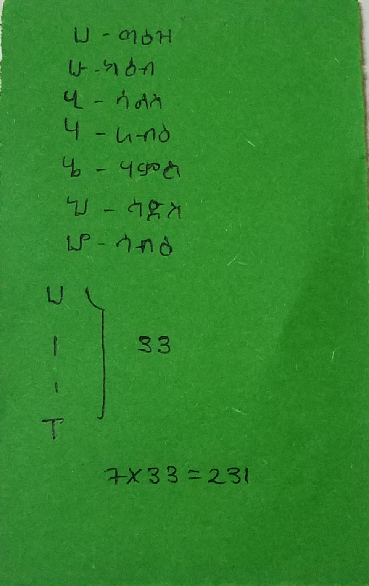
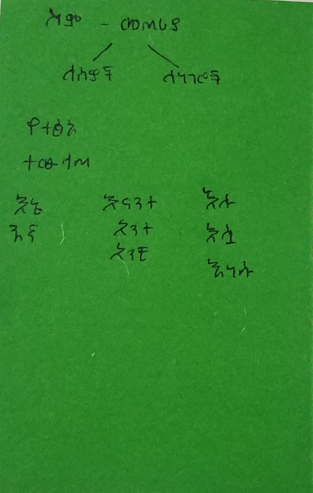
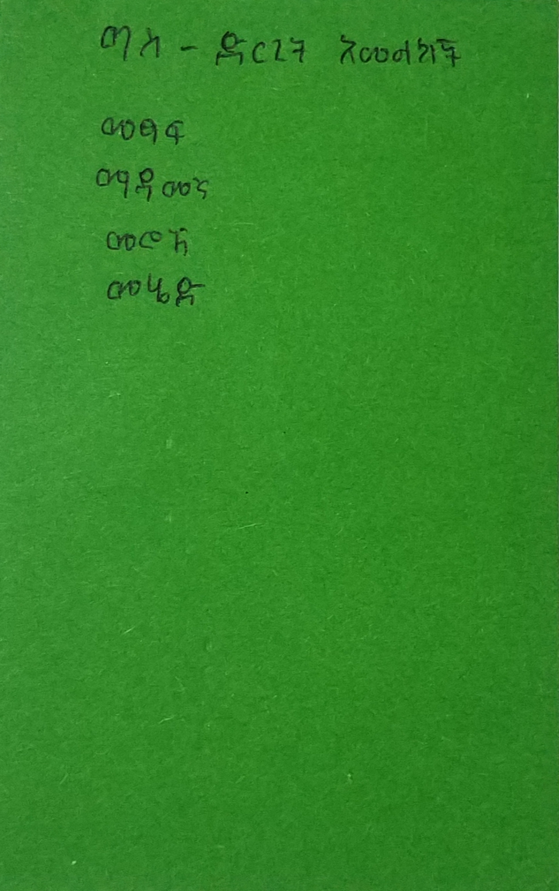
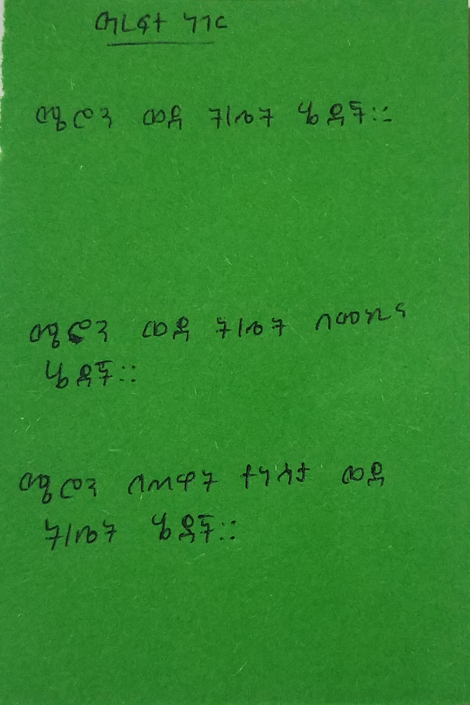

| ወደ ገፁ መጨረሻ | |
| ወደ ገፁ መጨረሻ | |
ሆሄያትበአማርኛ ዉስጥ 33 ሆሄያት አሉ፡፡ ሆሄያት በሁለት ይከፈላሉ፡፡እነሱም፡-
ሆሄያትን መማርቃላትቃላት ሆሄትን በመጠቀም የሚመሰረቱ ሲሆን በዕለት ተዕለት ህይወታችን የምንጠቀምባቸው ናቸዉ፡፡ ቃላት ትርጉም የሚሰጡ መሆን አለባቸዉ፡፡ ለምሳሌ፡- ቃ በሚለው ቃሪያ ማለት እንችላለን ዓረፍተ ነገርዓረፍተ ነገር በስም እና በግስ የሚመሰረት ትርጉም የሚሰጥ የቃላት ስብስብ ነው፡፡ እንዲሁም ድርጊትን እና ስሜትነ ለመግለጽ እንጠቀምበታለን:: ስም እና ግስ ምን ማለት እንደሆነ በቀጣዩ ቪዲዮ ላይ ተመልከቱ ስም እና ግስ  ሃረግሃረግ ደግሞ በዉስጡ ስም እና ሌሎች የቃላት አያያዦች ቢኖሩትም ትርጉም ግን ሊሰጥ አይችልም፡፡ ምሳሌ፡- ሜሮን ወደ ቤት አልማዝ ወደ ገበያ ምሳሌያዊ ንግግሮችምሳሌያዊ ንግግሮች በንግግር ወቅት የምንጠቀምባቸዉ ሲሆኑ አንድን መልዕክት በሚገባ እና በማይረሳ መልኩ ለማሰተላለፍ ይጠቅማሉ፡፡ በአማርኛ ቀንቀ ዉስጥ ብዙ ምሳሌያዊ ንግግሮች አሉ፡፡ ምሳሌምሳሌ፡- ላም አለኝ በሰማይ ወተተን የማላይ ሲሮጡ የታጠቁት ሲሮጡ ይፈታል የቆጡን አወረድ ብላ የብብተን ጣለች ምሳሌያዊ ንግግሮች ከነትርጉማቸውየአንዳንድ ምሳሌያዊ ንግግሮች ትርጉም
|